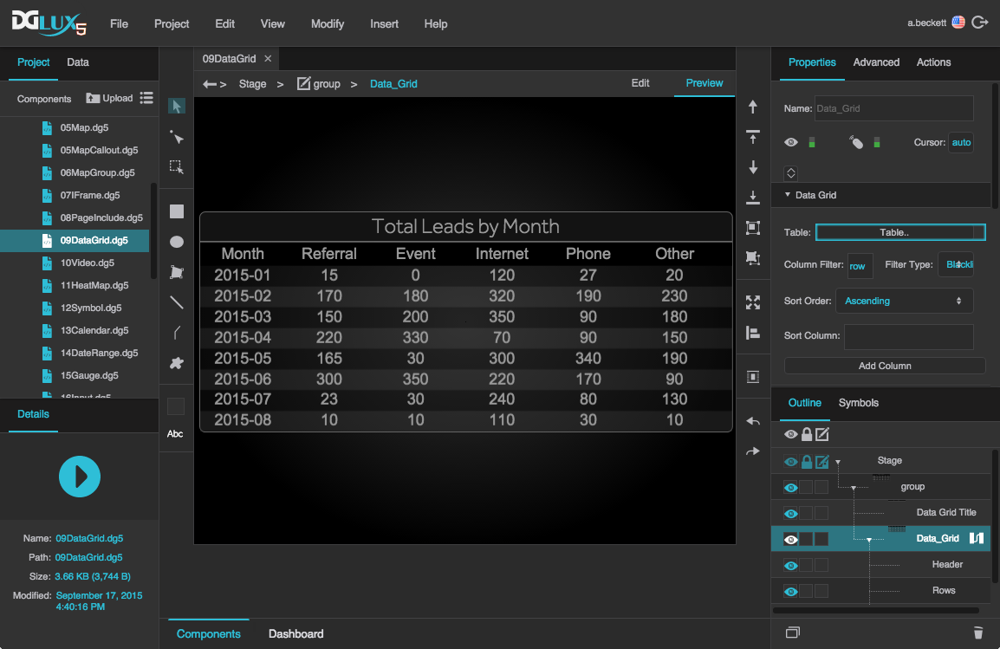

Data Grid
The data grid component lets you display data from a source table, as a set of rows and columns. This page includes quick steps for creating data grids and answers to some frequently asked questions about data grids.
For a detailed reference of properties that affect data grids, see Common Properties and Data Grid Properties.

A data grid component in DGLux5

About Column Editors and Column Order
When you create a data grid, you use column editors to control which columns appear in the grid and to control some properties of those columns, such as sortability.
There are three types of column editors: All, Name, and Repeater.
By default, one All column editor is included in a new data grid component. The All type of column editor dictates that all of the columns from the source table are included in the grid, except for those that you filter out of the entire grid. The All column editor also lets you edit properties for all grid columns. Regarding column order, when you use the All column editor, grid columns will appear in the same order as source table columns, unless you use a whitelist filter—in that case, grid columns appear in the order specified in the Filter property. With the All column editor type, grid columns have the same column heading text as source table columns.
If you prefer, you can use Name column editors instead. Each Name column editor dictates that one specific table column is included in the grid, and each Name column editor also allows you to edit properties for that particular column, including the column heading text. When you use Name column editors, columns in the grid appear in the order that the column editors appear in the Outline, unless you use a whitelist filter. Just as with an All column editor, the column order in the whitelist filter overrides the column order elsewhere. Additionally, Name column editors allow you to create and manage categories.
Name column editors are also useful when creating column renderers. A column renderer displays a specified symbol in each cell of a column, using symbol parameters and data from the source table to affect each symbol instance. Column renderers are similar to repeaters. You can see two examples of column renderers in the FAQ, under "How do I put images in my data grid?" and "How do I clip content in my data grid?"
The third and final column editor type is the Repeater column editor. This is the most complex type and allows for the most flexibility in the data grid. A Repeater column editor lets you use a configuration table to determine:
- Which source table columns appear in the grid
- Which symbols represent those columns (if any)
- Properties of the symbols
You can see an example of a Repeater column editor in the FAQ, under "How do I use a Repeater column editor? How do I make a grid with a dynamic number of columns?"
Load Data
Typically, before you can design a chart or data grid, you must load a table in the dataflow.
To load a table, follow the steps in Working with Tables.
Create a Data Grid
This section shows quick steps for creating a data grid.
After inserting a data grid component and loading data:
In the Outline, select the data grid, and click Dataflow to open the dataflow window.
Bind the output table from your dataflow to the Table property of the data grid.
The data appears in the data grid component.
With the data grid selected in the Outline, in the Selection properties, choose a fill and stroke and a selection behavior.
If you want to allow the user to select multiple rows, choose Multi-Select.
In the Outline, select the data grid's header.
Style the data grid's header using the Property Inspector.
In the Outline, select the data grid's rows.
Style the data grid rows using the Property Inspector.
In the Outline, select the "Column 0" column editor, which is a child of the "Columns" node.
Set Sortable to TRUE.
This allows the user to sort the data grid by any column.


Using the Category Feature
Data grid categories allow you to create multiple levels of headers for grid columns. If columns within the same category are adjacent, their category headings are merged:

If columns within the same category are not adjacent, the category headings are not merged:

When you create data grid categories, you add them to the Outline as column editors.
These steps show you first how to use the category feature to categorize columns by type of data, and then how to change the categorization to be by device. These steps illustrate adding only one level of categorization, but you could use the same process to create multiple levels.
- Create a table for your data grid that looks like the table below. Use the following column headers:
device_1_tempdevice_2_tempdevice_1_airflowdevice_2_airflow
Delete the existing column editor, and create six new column editors for your data grid by clicking the Add Column button six times.
Set the Type property for all six column editors to Name. You can select all six column editors and then change the property once.
- Set the Selector and Category properties for each column editor as follows:
- For Column 0, set Selector to
Tempand leave Category blank. - For Column 1, set Selector to
device_1_tempand set Category toTemp. - For Column 2, set Selector to
device_2_tempand set Category toTemp. - For Column 3, set Selector to
Flowand leave Category blank. - For Column 4, set Selector to
device_1_airflowand set Category toFlow. For Column 5, set Selector to
device_2_airflowand set Category toFlow.This creates a table with four columns that are grouped into two categories.
You can change the names in the Outline for clarity, and this will also update the Label property for each editor, changing what appears in the headers.
- As another example, change the categories to the following:
- For Column 0, change Selector to
Device 1and leave Category blank. Change Label toDevice 1. - For Column 1, keep Selector as
device_1_tempand set Category toDevice 1. - For Column 2, keep Selector as
device_2_tempand set Category toDevice 2. - For Column 3, set Selector to
Device 2and leave Category blank. Change Label toDevice 2. - For Column 4, keep Selector as
device_1_airflowand set Category toDevice 1. For Column 5, keep Selector as
device_2_airflowand set Category toDevice 2.This creates a table with four columns that are grouped into two categories, but the categories are not together.
To place columns in the same category next to one another, select column editors in the Outline and then use the Bring Forward and Send Backward commands in the Quick Access panel. You cannot reorder column editors in the Outline by dragging.
This creates a table with four columns that are grouped into two categories.


Data Grid FAQ
For frequently asked questions about manipulating the tables that determine the contents of a data grid, see Working with Tables.


More Resources
This thread in the DGLogik Community Forum addresses data grids: